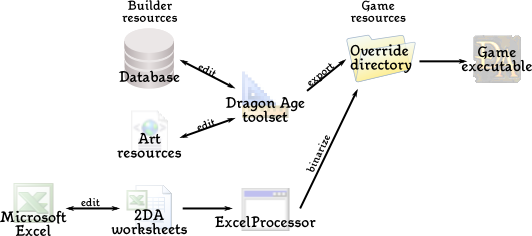

Design
Game Design is everything from creating this NPC, to being ready to export everything to be used in Game. This is all made via various sections of the Dragon Age Toolset.
Contents
Overview
 |
{kind=link}
The Toolset can probably be seen as multiple tools ,with the resources it creates being somewhat independently editable, with the connection being internal references. This is mananged thru a database ,and allows for multiple persons to work in only specific areas of the Toolset, without hindering another. As a whole it is probably too much to learn for one person alone. But the toolset gets it all together.
Anything you design is a single resource for the next step, so one can separate the tools into resource categories, as seen with the Resource palette. Dragon Age has two main classes of resources. Designer resources that are stored in the database and art resources that are stored as files in your file system, with art resources being supplemental to what is covered here.
The other important resource are two-dimensional Arrays (2DA's) ,which amongst other things contain variables and definitions, that the designer can "play out". Or are merely supplemental.
The diagram illustrates the general outline of how each of these types of resource is edited, processed, and used by the game:
Module Foundation
Resources are not created into the blue, as each has to be created on top of a so called Module. This is especially the case for Designer Resources in the Database ,since their connections within the Toolset are made with the Modules properties in mind. One such Resource may only be usable and editable when it is connected to the current active Module for example. However it is possible to move Resources from and between modules.
With that in mind, before creating a Resource one should always create and open the correct Module. Custom "Addin" Modules with a Name of your choice is the preferred method and the only way to export a Module and its Resources successfully.
- The Toolset is responsible for exporting Designer Resources out of the Database into the corresponding Module directory.
- Art Resources and 2DA Files have to be placed into the Modules directory by hand.
- See Main Article: Module
Designer resources
This is what the designer creates, and when talking about designing a resource the resource category is what matters here. Designer resources are stored in the toolset's accompanying database and are for the most part focused on the mechanics of the game - the stuff that makes an adventure "work".
Designer Resources include the following, but not exclusively:
- Areas - the fully interactive level
- Items - any item that can be carried by the Player or NPC
- Creatures - Creatures that are Monsters or NPC's alike
- Conversations - a complete Conversation with any Voice over accompanying it
- etc.
- See Main Article: Designer Resources
Two-dimensional Arrays
2DA's contain various Data not only about the Resources, but for the whole game as well. 2DA's are packed into GDA file type, which are generated from XLS (Excel) files. The original XLS files supplied with the Toolset can be found in:
[Dragon Age install directory]\tools\source\2da
- See Main Article: 2DA
Saving and Exporting
For the new content to be playable, it has to go through a export process by the Toolset. So when the Resources are ready to be tested, it is time to export. This is also covered on the designer resource page.
- See Main Article: Exporting a module
See Also
| Language: | English • русский |
|---|